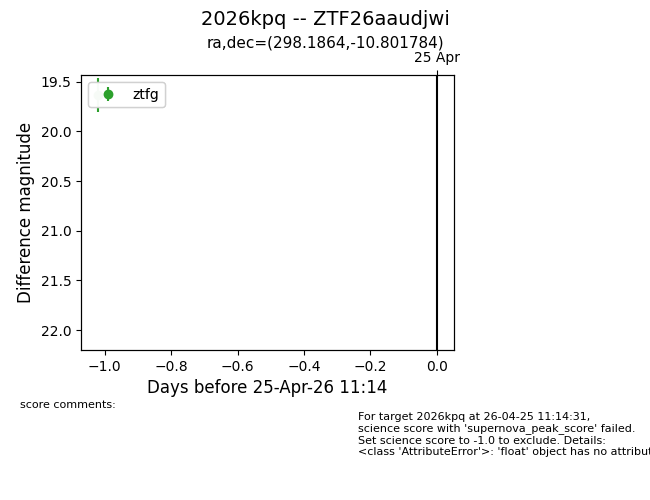
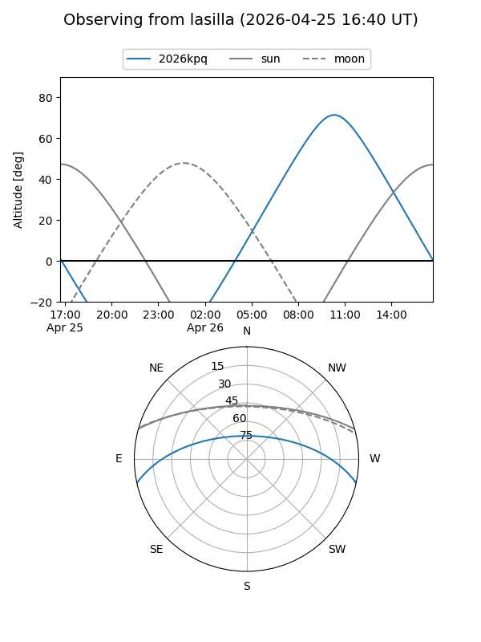
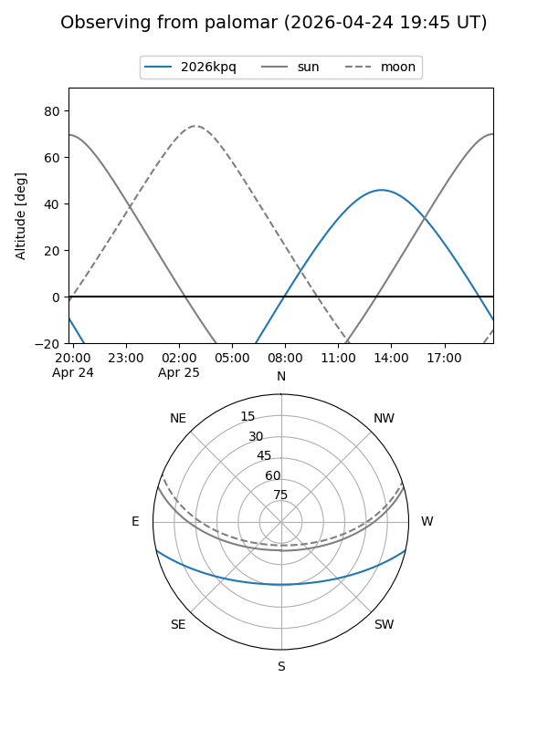

2026kpq
Target 2026kpq at 2026-04-25 11:15
Aliases and brokers:
FINK: link
Lasair: link
ALeRCE: link
TNS: link
YSE: link
alt names
ZTF26aaudjwi (ztf,fink_ztf)
2026kpq (tns,yse)
Coordinates:
equatorial (ra, dec) = 298.1864,-10.80178
equatorial (HMS+DMS) = 19:52:44.72,-10:48:06.42
galactic (l, b) = (30.0071,-18.45351)
Flags:
Photometry:
last ztfg=19.63
1 ztfg detections
Lightcurve

Visibility


Additional plots